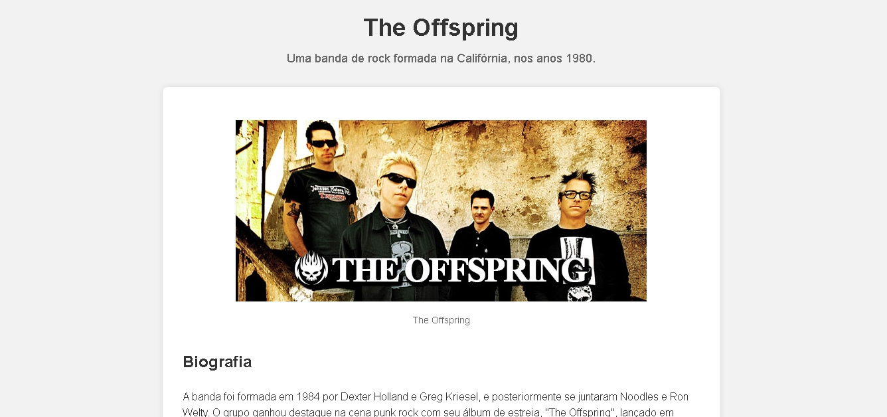

The Offspring
Sobre o Projeto
Este projeto foi criado utilizando HTML, CSS e JavaScript.
O projeto exibe uma página de tributo ao grupo The Offspring, com informações sobre a banda, discografia e membros, utilizando um layout moderno e responsivo.
Imagem do Projeto

Tecnologias Utilizadas
- HTML5
- CSS3
- Git e GitHub
Conceitos praticados
- HTML semântico
- eventos DOM
- Variaveis CSS
- Flexbox